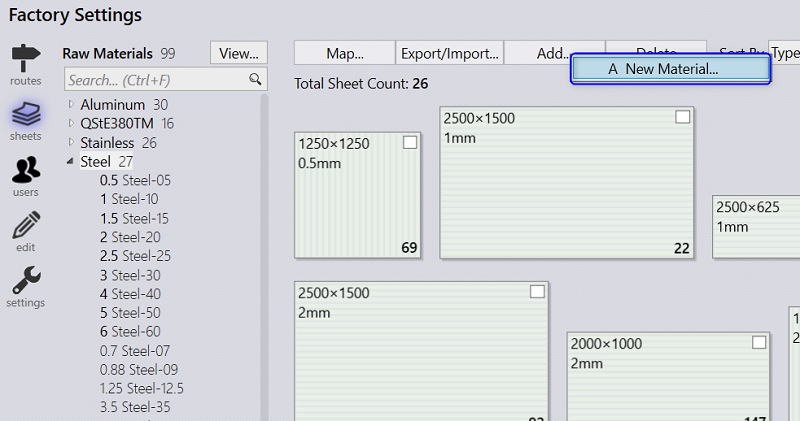
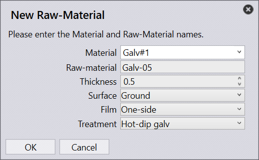
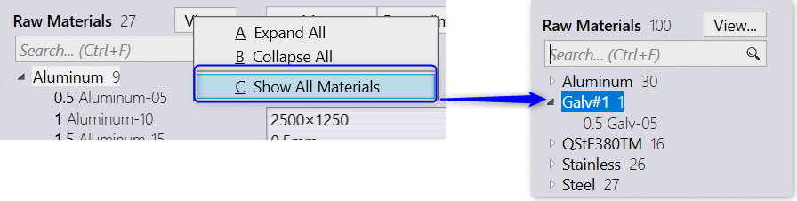
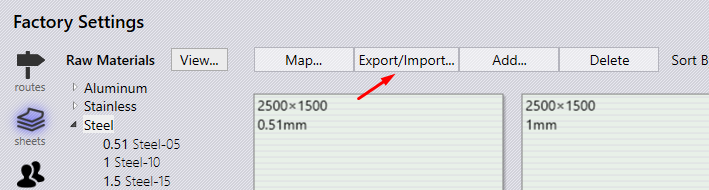

Use factory . sheets . add… command and select New Material… menu option to add a new material or raw material.

Fill in the Material name, unique new Raw Material name and thickness(as per the working unit set in Praaxis settings)

Note: Pick View… Show All Materials option to see the newly added materials. Otherwise Praxis show only the inventory material in the materials/sheets list.


The material/sheet list is exported to a text file in a hierarchical format, Material → Raw material → Sheets. This is terser and more expressive format than the regular CSV files. The exported data is structured as:
<File – Version>
Material – Name = [Bend Material],[Density], [FName]
RawMaterial – Thickness, Name=[FName]
Sheet-Width, Height, Grain, Desc = Qty, [Factory], [Shelf], [Cost], [Comments]
Each next level hierarchy is intended by a single space than its parent:
1
Bronze = Aluminium
0.5, Bronze-05
1500, 1500, Vertical=112
The exported data can be edited and imported back to apply the changes. You can also add additional fields (not exported by default) to the exported content. These optional fields are marked under the square bracket in the schema.